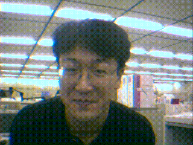

今井 倫太

自己紹介
平成4 慶應義塾大学 理工学部 電気工学科卒．
平成6 同大大学院 修士課 計算機科学専攻終了
同年，NTTヒューマンインタフェース研究所入社
平成9、ATR知能映像通信研究所研究員.
平成14 慶應義塾大大学院 理工
学研究科 後期
博士課程 開放環境科学専攻計算機科学専修修了
平成14 慶応大学理工学部情報工学科安西・山崎研助手,ATRメディア情報科学研究所客員研究員.科学技術振興機構 さきがけ型研究 研究員.
現在 慶応大学理工学部情報工学科 教授,ATR知能ロボティクス研究所客員研究員., 博士（工学）
以来，VR上のエージェントや自律ロボットとのインタラクションの研究に従事．
ロボットとの対話、センサを用いた状況知覚に興味を持つ。